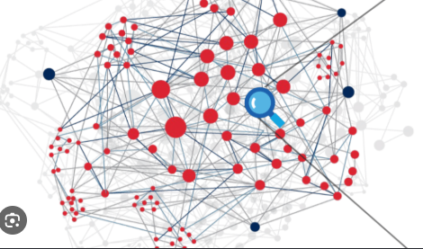

Overview
A fully autonomous RAG pipeline purpose-built for Somic Ishikawa's internal Planning & Quotation team. The system ingests raw folder uploads, automatically segregates processable files, routes each through OCR and quality gates, stores raw and clean outputs in PostgreSQL, and indexes structured memory in Hindsight with a knowledge graph and hybrid retrieval — no manual handoff between upload and queryable intelligence.
2,500+ documents ingested across PDFs, slides, CSV, TXT, and PPTX — bilingual Japanese and English. A LangGraph manager agent routes queries to RAG, summarizer, concept-relationship, or greeting flows. Every answer is grounded, cited, and streamed with exact source pages. Evaluation is team-driven: each upload batch defines golden questions and expected answers to test coverage and reverse-engineer gaps.
Production Context & Business Impact
The Target Users: A 10-member Planning and Quotation enterprise team tasked with processing complex incoming project requests and generating client quotes.
The Business Problem: Drafting an accurate quotation required manually digging through a massive historical archive of diverse document formats (PDF, CSV, TXT, PPTX). This caused severe operational bottlenecks and delayed client response times.
Strict Constraints: Due to data governance policies, no external APIs could be used. The entire system had to be deployed fully on-premises, managing bilingual documents natively in both English and Japanese.
The Solution: A secure, on-premise RAG platform that parses multi-format documents, processes dense tables, and extracts precise information — isolating exact text and table extractions down to the specific page number for auditability.
Measurable Impact: Historical document synthesis reduced from hours of manual searching to under 10 seconds per query — a 360x speedup for the quotation team.
Architecture
Three stages — ingestion, indexing, and agentic query — running end-to-end without manual handoffs.
Ingestion
Japanese manufacturing docs
e.g. thank you slides,
covers, form fills
Vector database

Query
Core Engineering Challenges & Solutions
1. Layout-Aware Table Ingestion
The Challenge: A massive portion of historical PDFs contained mixed orientations — some tables were structured horizontally, others vertically. Standard OCR models failed up to 45% of the time on rotated layouts.
The Evolution: Initially built an LLM-based preprocessing step for layout detection. Replaced the entire bottleneck with MinerU, which natively outputs structural layout orientation in its JSON payload — eliminating the orientation preprocessing overhead entirely.
The Result: Parsing error rate dropped from 45% to near zero. MinerU routes text/table pages through the standard OCR path and sends diagram pages directly to GLM-4.6V Flash.
2. VLM Hallucination Guardrails
The Challenge: Smaller OCR/Vision models encountering hyper-dense tabular data frequently fell into structural hallucination loops — filling the maximum context window by repetitively printing junk characters.
The Solution: An algorithmic guardrail designed from scratch: Mean Anagrams with Hash Mapping. The system monitors real-time OCR text streams; when character-variation frequency jumps beyond a calculated variance threshold, a hallucination loop is flagged.
The Fail-Safe: A 3-tier retry mechanism automatically kicks off. If the lightweight OCR engine triggers the guardrail three times, the pipeline dynamically escalates the troublesome page to a larger, robust GLM-4.6V Vision-Language Model (VLM) to guarantee extraction accuracy.
3. Scaling Throughput on Hardware Constraints
The Challenge: Deploying a high-capability 19B model locally on a DGX Spark station hit severe hardware limits. With a memory bandwidth bottleneck of 273 GB/s, the average model throughput crawled at 35–40 t/s, forcing users to wait 80–90 seconds for comprehensive document analysis.
The Solution: Refactored the serving stack from stock vLLM to the Atlas LLM Inference Engine (Rust + CUDA). By leveraging Atlas's kernel optimizations and memory layout tailoring for Qwen3.6 35B A3B NVFP4, token generation performance effectively doubled.
The Result: Throughput spiked to 70–80 t/s, collapsing client latency from 90 seconds down to 6–10 seconds per request — a near-instantaneous experience for the quotation team.
4. Bilingual Cross-Lingual Q&A
The Challenge: Factory teams work in both Japanese and English. Generic LLMs hallucinate without grounded document context — especially across languages.
The Solution: Built bidirectional JP ↔ EN grounded Q&A. Ask in either language, receive answers with exact source documents attached — no translation API needed, all on-premise.
Key Achievements & Impact
- Delivered fully autonomous ingestion — folder upload → file segregation → OCR → quality gates → indexed memory, zero manual intervention
- Processed 2,500+ internal documents (PDF, CSV, PPTX, TXT) with automatic routing of non-processable files
- Reduced quotation data compilation time from hours to under 10 seconds per query (360x speedup) for a 10-member enterprise team
- Built algorithmic hallucination guardrails (Mean Anagrams + Hash Mapping) with 3-tier retry escalation to VLM fallback
- Solved 45% OCR failure rate on rotated table layouts via MinerU layout-aware ingestion — near-zero parsing errors
- Optimized on-prem inference: vLLM ~35 t/s → Atlas ~80 t/s, collapsing latency from 90s to 6–10s on DGX Spark
- Indexed Hindsight structured memory and knowledge graph with BGE-M3 embeddings and hybrid retrieval (RRF, semantic, BM25)
- Enabled bidirectional JP ↔ EN grounded Q&A with exact page-level citations for auditing
- Deployed LangGraph manager agent — RAG, summarizer, concept-relationship, and greeting sub-agents with golden Q&A evaluation per batch
- Shipped working chatbot demo with cited, streamed responses (see video above)
Intelligent Agent Capabilities
Beyond basic Q&A — the agent stack supports memory, summarization, and cross-lingual access.
Grounded answers + sources
Responses include related source documents, not isolated generated text.
Hindsight memory
Chat history is not stored as raw transcripts — important facts are extracted into Hindsight for useful retrieval across sessions.
Conversation summarizer
After long threads across multiple topics, summarizes from the start so context is not lost.
Concept relationships
Surfaces open concepts across the full chat for better understanding of how ideas connect.
Cross-lingual Q&A
Bidirectional JP ↔ EN — ask in Japanese or English, receive grounded answers in the other language with sources.